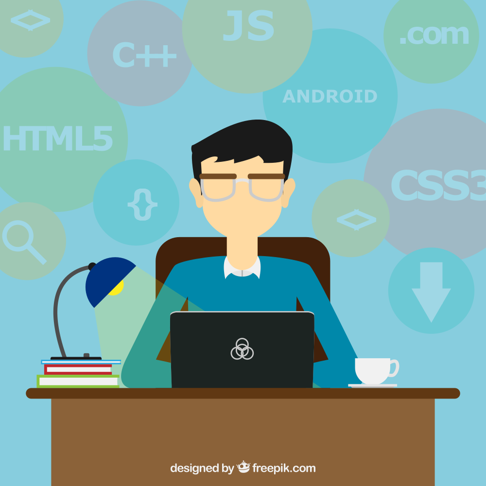
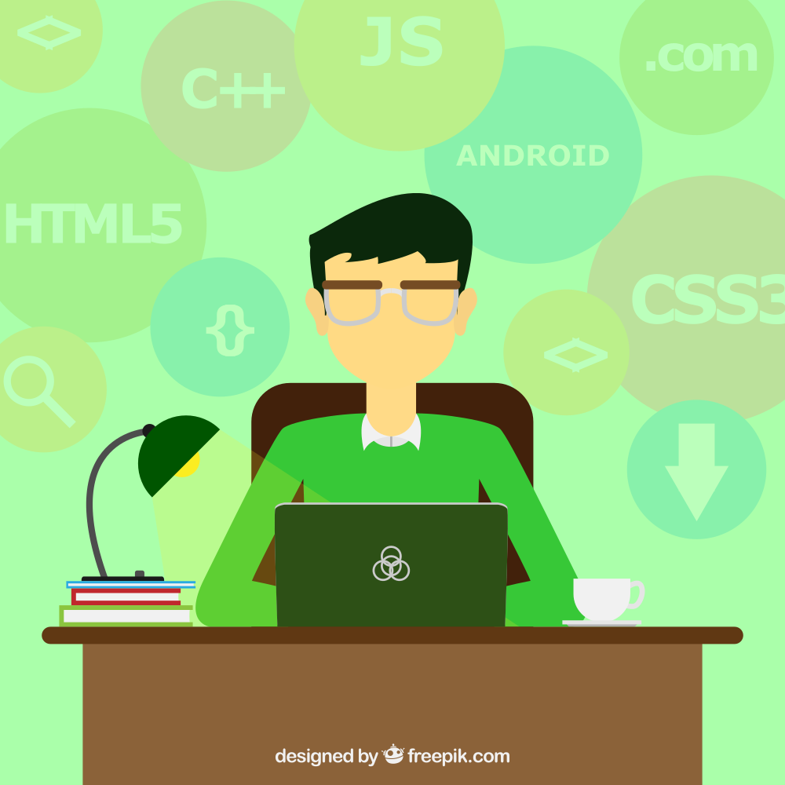
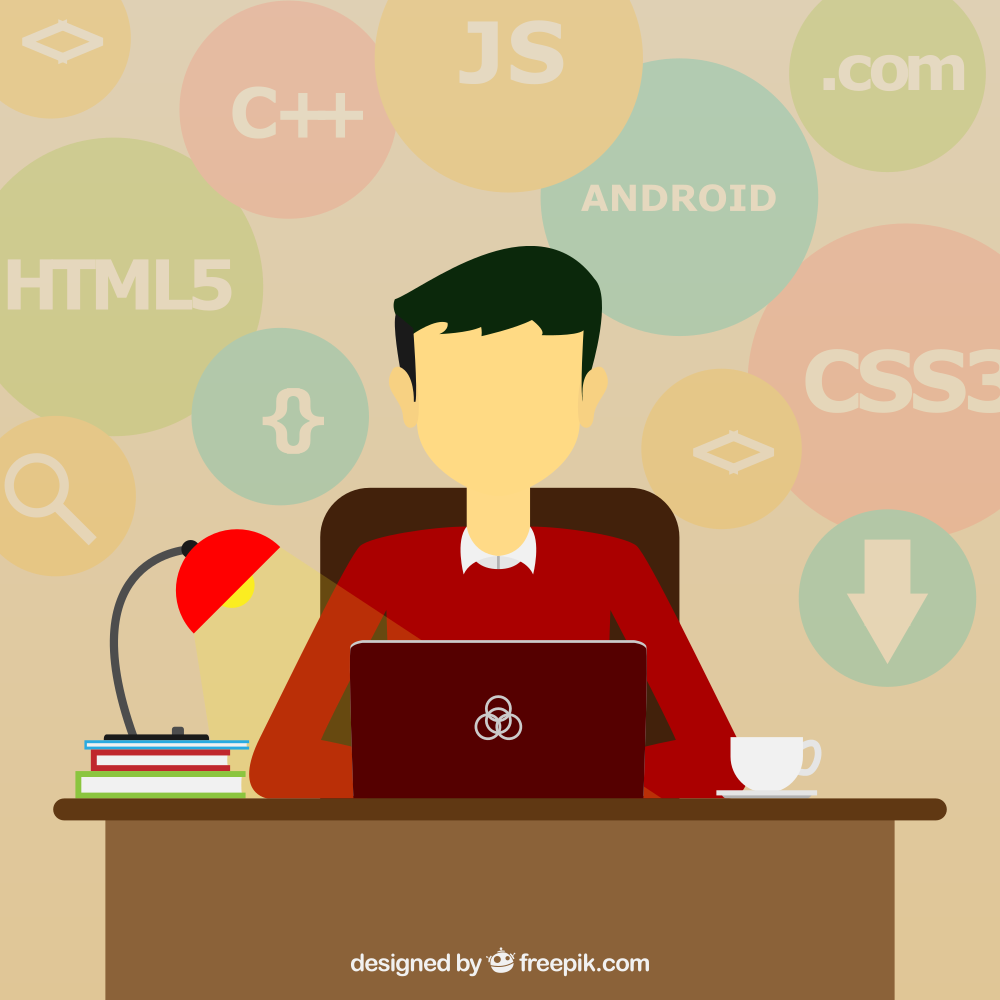

Dane Miller
Dane is the 'Founder' of BlueScreen1 if it ever had any.
He brought the group together and had the idea for this project.
He is also the lead Android Developer on Poat but also worked on the Web Version.
His favourite (yes we're using Brittish English) programming language is python and his hobbies include coding, origami and gaming.
Frequent saying \"Awks Awks Awks\

Justen Morgan
Justen (Boshes) is the comic relief if you need one.
Justen with his hilarious \"GG we failed\" phrase after every roadbump relieved some stress in the development process.
He has an impressive 5,500 song music library and an even more impressive shirt collection which leaves everyone in envy and wondering where he got them. Notable quote \"I dont need gym I'm already sexy.\""

Travis Smith
TevyT the computer guy.
Though we are all developers and all had similar grades,
TevyT was still the one any and every1 went to for computer/programming related questions.
Using straight linux he is dedicated to programming and was the first to start prepare for the future with Ruby.
Plus he has a car